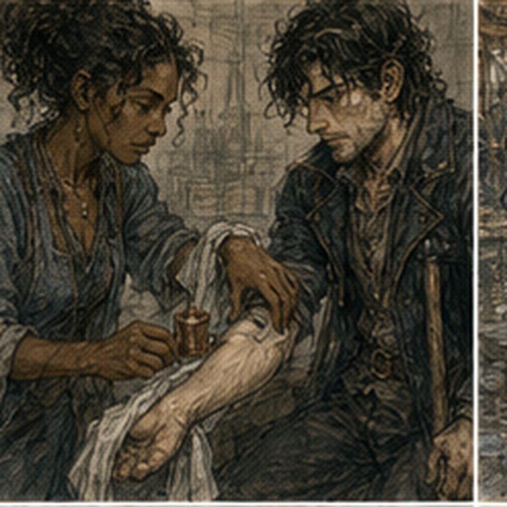

Hessa had removed the charcoal. Not from my arm. From the table. There was no charcoal stick beside the copper. No little marks waiting to become important. I noticed this before I sat down.
Hessa noticed me noticing.
“Good morning.”
“No target.”
“Good morning, Greg.”
“Good morning. No target.”
“Sit.”
I sat. Yesterday had left me with warm palms, a tired right calf, and the disturbing discovery that being called Person could require several attempts. This morning the palms were normal. Right calf normal.
Residual limb quiet. Phantom foot present, mostly toes today. No pain. No thumb. No finger urge. Grip normal. Hessa checked twice anyway.
“You went back.”
I looked at her.
“Theatre.”
“Yes.”
“You were not a messenger.”
I narrowed my eyes.
“Teren's sister?”
“No.”
“Herb woman?”
“No.”
“Bread seller?”
Hessa wrote something.
“That is not an answer.”
“You are becoming easier to track than you think.”
“That sounds threatening.”
“It is mostly gossip.”
“Worse.”
She put the page aside. No more theatre. Good. She turned my right forearm palm-down on the support. Different position from last time. Not dramatically. Enough. I looked for charcoal again. Nothing.
“What question?”
“Direction first.”
I sat straighter.
“You think the prepared target pulled the response.”
“I think it may have.”
“So no prepared target.”
“Yes.”
“And you tell me direction before shape.”
“Yes.”
“That isolates whether changing direction after shaping was the problem.”
“No.”
I stopped.
“It helps distinguish it.”
“Yes.”
“That's what I meant.”
“No, it isn't.”
“Hessa.”
“Words matter when you are trying to decide what an observation excludes.”
“Fine.”
She pointed to a broad neutral patch on the outer half of my forearm. No mark. No suspended object. No thread. Her finger did not touch.
“Localized alteration in this region.”
“That is still a target.”
“A region.”
“A target region.”
“Yes.”
“So you did not remove targeting.”
“No.”
“You removed a fixed destination.”
“Yes.”
Better.
“What direction?”
“Toward your wrist.”
I looked at my wrist.
“Not elbowward.”
“Correct.”
“Why wrist?”
“Because your older unwanted pattern had a familiar elbowward component, and I do not want today's question tangled with it.”
“Good.”
“Also because you have a wrist.”
“That is less rigorous.”
“It is extremely well established.”

I almost laughed. Hessa did not. Probably on purpose. She reached for a narrow folded towel instead and slid it under my forearm. I watched her square the edges.
“You changed the support.”
“Yes.”
“Why?”
“The old one has charcoal on it.”
“That matters?”
“To the experiment? Probably not.”
“Then why mention it?”
“You asked.”
The towel raised my forearm perhaps half an inch. I flexed nothing. Still, the angle felt different enough that I noticed.
“Same arm position?”
“Close.”
“Close is not same.”
“No.”
“Does that become a confound?”
“Everything becomes a confound if you demand enough precision.”
“That sounds irresponsible.”
“It means I record it.”
She did. I looked at the page.
“You are writing towel.”
“Yes.”
“This is humiliating magic.”
“It is medicine with ambitions.”
That was worse. She moved the copper into view. Not close to the arm. Same familiar role. Observation. Not target.
“One draw?”
“Yes.”
“One shape?”
“Yes.”
“One directional instruction?”
“If the shape is stable.”
“RETURN.”
“Yes.”
“Release.”
“Yes.”
“No second trial.”
“Yes.”
“You decided that already.”
“Yes.”
“Even if it works?”
“Yes.”
“Even if it fails?”
“Yes.”
“Annoying.”
“Yes.”
She checked my hand position. Fingers relaxed. Wrist neutral. Elbow supported.
“Do not look at your wrist during the directional instruction.”
“Why?”
“I do not want you moving the hand or changing muscle tension while visually steering.”
“I wasn't going to.”
“Good.”
“Where do I look?”
“At the wall.”
I looked. Blank plaster. Excellent target.
“Before draw,” Hessa said, “tell me the full instruction.”
“Minimal draw. Localized alteration in the region you indicated. If stable, smallest asymmetry toward the wrist. No force. No broadening. Maintain underlying draw. Stop if anything changes outside the bounded response or if I cannot describe it.”
“RETURN on command.”
“Yes.”
“What direction?”
“Toward wrist.”
“Again.”
“Toward wrist.”
She waited. I waited. Nothing clever happened.
“Draw.”
I drew. Minimal. The copper changed. Right forearm. Familiar now. Not easy. Familiar. Those were different. No hand. No thumb. No left.
“Report.”
I did.
“Hold.”
Held.
“Shape in the indicated region.”
I shaped. The localized alteration appeared. Small. Not a point. Not a line. A patch with edges that were easier to describe than the center. It came slightly faster than last time. I reported that too.
“Stable?”
“I think.”
“Think or know?”
I waited. The patch did not broaden. No hand response. No movement.
“Know enough to continue.”
“Good. Direction.”
Toward wrist. I had known the direction before the draw. No charcoal. No fingers appearing afterward. No thread. Nothing to chase. I tried to let the smallest part of the altered edge favor the wrist side.
Something changed. I stopped doing anything more.
“Report.”
“Wrist-side edge sharpened.”
“Moved?”
“No.”
“Extended?”
“Maybe.”
“Maybe is allowed.”
“Center unchanged. Elbow-side edge unchanged. Wrist-side edge feels more distinct.”
“Anything else?”
“No.”
“Hand?”
“No.”
“Wrist?”
“No.”
“Thumb?”
“No.”
“Fingers?”
“No.”
“Left?”
“No.”
“Hold.”
I held. The wrist-side edge remained easier to find. Or I remained better at finding it because I expected it. That possibility arrived immediately. I told her.
“Good.”
“That was not good.”
“It was accurate reporting.”
“Possibly.”
“Still accurate.”
She watched my hand. I watched the wall. This was an absurd way to do magic. Probably healthy.
“RETURN.”
I returned. The localized alteration reduced. The wrist-side distinction softened with it. Underlying draw remained. No broadening. No motor urge. No wrist movement. No thumb. No unusual left response.
“Hold.”
Held.
“Release.”
Released. Hessa checked my hand before I could turn my arm over. Grip. Fingers. Thumb. Wrist. Temperature. Sensation. Fine. She wrote. I waited. She wrote more. I hated this part.
“Well?”
“You completed the sequence.”
“That is not the question.”
“It is one question.”
“The directional question.”
“Your report was consistent with a small directional asymmetry toward the instructed side.”
I stared at her.
“That sounds successful.”
“It sounds consistent.”
“Hessa.”
“You reported a sharper wrist-side edge. I did not independently observe the edge.”
“The copper?”
“Changed with draw and shaping. I saw nothing during the directional instruction that I would separate from that.”
“So still self-report.”
“Yes.”
“But unlike last time, it went the instructed direction.”
“By your report.”
“Yes.”
“Yes.”
I waited for more. She did not provide it.
“Does that increase your confidence?”
“In what?”
“That I can direct it.”
“A little.”
There. Small enough to be insulting. Real enough to matter.
“How little?”
“I am not giving you a number.”
“Qualitative scale.”
“No.”
“More than yesterday?”
“Yes.”
“Less than localized shaping?”
“Much less.”
“Less than RETURN?”
“Yes.”
“More than external effect?”
She looked at me.
“That is not a useful comparison.”
“Why?”
“Because one is an internal report about control and the other is a claim about effect outside the body.”
“Both are uncertain.”
“In different ways.”
Fine. I looked at the blank forearm. No charcoal. Nothing to point at afterward. The absence made the report feel less satisfying than Ch129. Then I realized that was backward. A mark had given me something visible to organize around.
Today Hessa had deliberately taken that away. I wanted to ask whether that made today's attempt harder. I asked.
“Possibly,” she said.
“Because there is less reference.”
“Possibly.”
“Could you mark the region after I shape instead of before?”
“Why?”
“So the mark cannot organize the initial response, but we still get a visual reference for where I reported it.”
Hessa considered that.
“Maybe.”
“Good idea?”
“Maybe.”
“You are abusing that word.”
“It is doing useful work.”
“What did removing the mark tell you?”
“Not enough yet.”
“It went toward the wrist.”
“Today.”
“You wanted direction first.”
“Yes.”
“And it worked better than changing direction after shape.”
“Today.”
“That distinction is becoming irritating.”
“It should remain irritating for a long time.”
“Do you think the charcoal caused the failure?”
“No.”
“You said it may have.”
“I still say it may have.”
“Then why no?”
“Because today's result does not tell me that it caused yesterday's result.”
“Ch129.”
“Yes.”
“Two days ago.”
“Yes.”
“Yesterday was theatre.”
“I know.”
“Good.”
She gave me a look. I had won something. Unclear what.
“Possible explanations,” I said.
“No list.”
“You hate lists.”
“I hate your lists before I finish my notes.”
“That is more specific.”
“Yes.”
I waited. She finished the line.
“Now?”
“No.”
“Hessa.”
“You already know them.”
“I want to know yours.”
“Fine. One: giving direction before shaping may help you organize the response.”
“Yes.”
“Two: removing the prepared charcoal destination may have mattered.”
“Yes.”
“Three: wristward may simply be easier than the direction I chose last time.”
I had not thought of that.
“Why?”
“I don't know.”
“Anatomy?”
“Possibly.”
“Old pattern?”
“Possibly.”
“Position?”
“Possibly.”
“Expectation?”
“Possibly.”
“You enjoy this.”
“No.”
“Liar.”
She continued.
“Four: your report may be biased by knowing the intended direction.”
“Yes.”
“Five: there may be a small real directional response that you can currently produce more reliably when the direction is established before shaping.”
I looked at her. She looked back.
“That one was last.”
“Yes.”
“You did that on purpose.”
“Yes.”
“Because it is least established.”
“Yes.”
I liked it anyway. That was my problem. I could already feel my attention trying to promote the fifth explanation because I liked it. The other four became obstacles instead of possibilities. I knew that habit.
Knowing it did not stop it.
“Hessa.”
“Yes?”
“If I had reported elbow-side instead, what would you have done?”
“Written elbow-side.”
“Would that lower your confidence?”
“In directional control under today's instruction, yes.”
“Would you think I followed some hidden prepared target?”
“There was no hidden prepared target.”
“Good.”
“Why good?”
“Because I was checking.”
She stared at me.
“You think I hid charcoal from you?”
“Not charcoal.”
“What?”
“I don't know. A scratch. A vein. Something you selected.”
“I selected a region of your arm.”
“So yes.”
“No.”
“Technically yes.”
“Greg.”
“Fine.”
She wrote again.
“What now?”
“Suspicious of clinician.”
“You did not write that.”
“No.”
I leaned enough to try to see. She covered the line with her hand. Rude.
“Repeat next assessment?”
“Maybe.”
“Same direction?”
“Maybe.”
“Opposite direction would be better.”
“Why?”
“Because if wristward is anatomically easier, opposite direction tests whether I can choose rather than merely produce a favored asymmetry.”
Hessa stopped writing. I waited.
“That is a reasonable question,” she said.
Excellent.
“So next time.”
“I said reasonable.”
“Hessa.”
“I did not say next.”
Cruel.
“What would be better?”
“I need to decide whether changing direction is worth another safe attempt before I have more ordinary repeatability at direction-first shaping.”
“So repeat wristward.”
“Maybe.”
“Then opposite.”
“Maybe.”
“Then external.”
“No.”
I had known that one. Worth trying.
“What about the thread?”
“No.”
“I did not ask to use it.”
“You were about to.”
“I was going to ask whether better directional control would be one of your reasons to reconsider it.”
Hessa paused.
“Yes.”
I waited.
“That is all?”
“That is all.”
“So if this becomes repeatable...”
“Then one reason to revisit an external question becomes stronger.”
“Not necessarily thread.”
“Correct.”
“Good.”
“Why good?”
“Because I am learning.”
She looked unconvinced. Fair. She checked my arm again. Still fine.
“What is the count?” I asked.
“Sixteen successful minimal draws.”
“Twelve shapes.”
“Yes.”
“Directional attempts?”
She paused.
“You are trying to create a category.”
“I am trying to count.”
“You have several attempts involving directional instruction under different conditions.”
“Four external REACH-type attempts?”
“Three external.”
“I know. I mean including internal.”
“No.”
I frowned.
“Why no?”
“Because you are about to make unlike things look alike by giving them one number.”
That was unfair. Also accurate.
“Ch129 changed direction after shaping.”
“Yes.”
“Today direction established before shaping.”
“Yes.”
“Both directional.”
“Yes.”
“So two internal directional questions.”
“If you want to write that in your notebook, you may.”
“Will you?”
“No.”
“What will you write?”
She turned the page slightly. Not enough for me to read all of it. Enough to see separate lines. Of course.
“Conditions,” she said.
“That is not a count.”
“Correct.”
I sat back. This was why she owned the room. Not because she was always right. She had been wrong before.
She had changed tests, changed language, shelved the thread after being interested enough to repeat it, and admitted when her own instruction might have been poor. That mattered more than pretending the sequence had been inevitable.
I preferred inevitable sequences. They were cleaner. Reality remained badly managed. Not because she was always right. Because she refused to let convenience become evidence when she could help it. I still wanted the number.
I would probably write one. Carefully.
“Tomorrow?”
She considered me. I hated when she did that.
“No magic.”
I blinked.
“Again?”
“Yes.”
“One day?”
“Yes.”
“Assessment after?”
“Yes.”
“Why rest after one clean internal attempt?”
“Because it remains an altered response in the same recovering system.”
“No symptoms.”
“Good.”
“Clean RETURN.”
“Good.”
“Clean release.”
“Good.”
“So why not tomorrow?”
“Because the absence of a problem is not a reason to increase frequency every time you notice the absence.”
I stared at her.
“That sounds prepared.”
“It is. You keep asking the same question.”
Fair.
“What am I allowed to do?”
“Live.”
“I know.”
“Apparently you need repetition.”
I looked toward the door. Theatre existed in that direction eventually. So did Lyssa, depending on where she was working. So did Sevren. So did the Guild. So did lunch. A surprisingly crowded category.
I had gone to theatre yesterday expecting one thing and been used as three other things instead. That thought belonged to yesterday. I left it there. Mostly.
What mattered now was that none of those places required me to know whether the wrist-side edge had been real. The fact was almost offensive. Carrow would continue functioning without a conclusion.
Hessa said:
“Greg.”
“Yes?”
“Do not spend tomorrow deciding whether today's wrist-side edge was real.”
“I cannot promise not to think.”
“I did not ask that.”
“What did you ask?”
“Do not turn the day into an unrecorded extension of this assessment.”
I considered arguing. Did not.
“Fine.”
“Good.”
I stood. My forearm looked completely normal. No charcoal to wash off. That was mildly unsatisfying. At the door I stopped.
“Hessa.”
“Yes?”
“If next time I produce the same wristward asymmetry again, does that count as replication?”
“It counts as another observation under similar conditions.”
“That is not what I asked.”
“It is the answer you are getting.”
I left. Outside, Carrow was already noisy. A cart blocked half the street. Two men were arguing about onions. Someone farther down was hammering metal badly. The bread seller saw me. I prepared for Messenger.
He said:
“Landlord.”
I stopped. He grinned. Absolutely fucking not. I pointed at him.
“No.”
He laughed hard enough to lean on the stall. I kept walking. Tomorrow, no magic. After that, Hessa again. Today the answer was not yes. It was not no either.
It was a sharper edge on the side I had been told to choose, observed by exactly one person from inside his own arm. Terrible evidence. Better than Ch129. I could live with that.